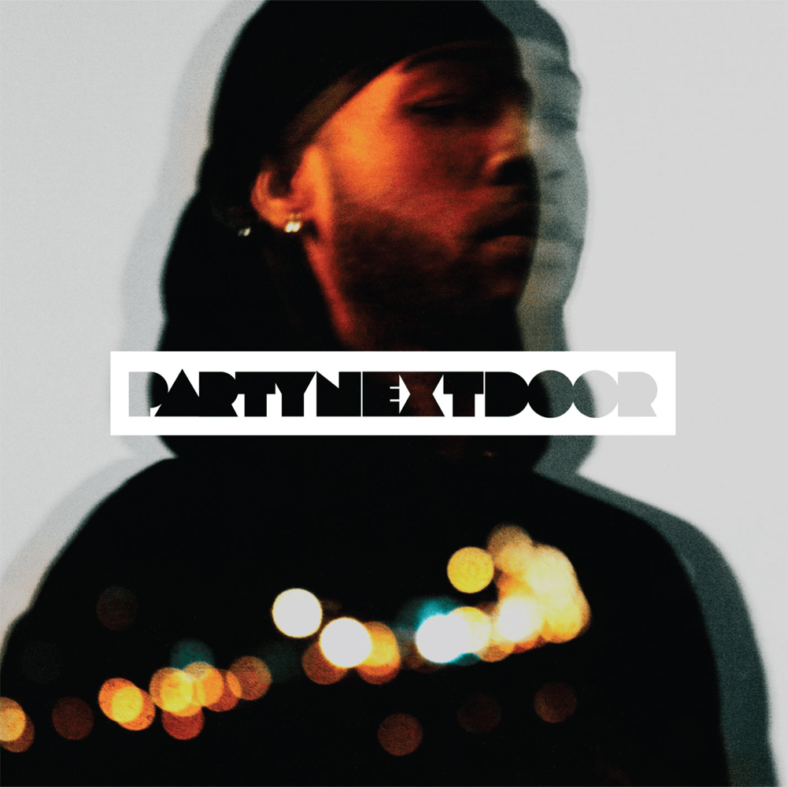
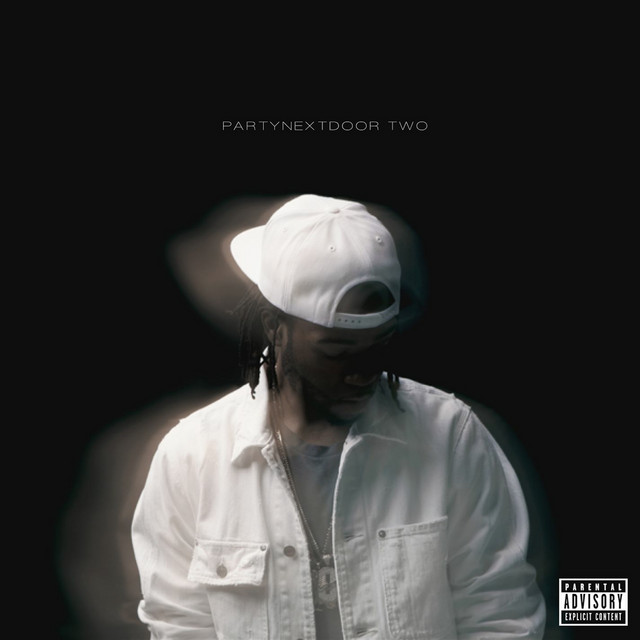
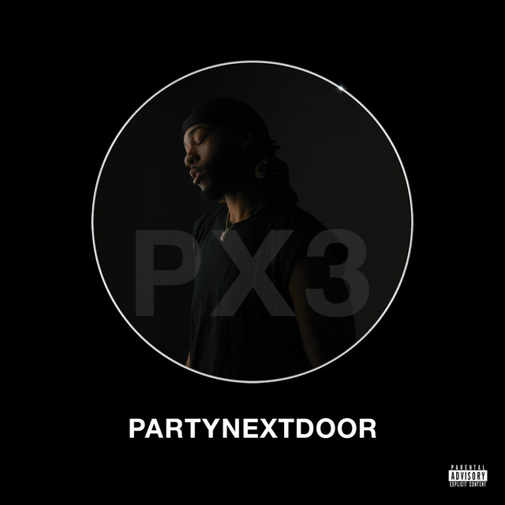

PARTYNEXTDOOR (2013)
El album que lo llevo a las estrellas, incluye temas que me encantan como "Relax with Me", "TBH", "Right Now" entre otros.
Jahron Anthony Brathwaite, mejor conocido como PARTYNEXTDOOR, se enfoca principalemnte en R&B atmosférico contemporáneo, definitivamente el mejor en este campo.
Nacido el 3 de julio de 1993 en Mississauga, Ontario, Canadá, PARTYNEXTDOOR comienza haciendo música usando su nombre real antes de convertirse en el primer artista firmado por la discográfica OVO Sound de Drake en 2013.
Su estilo mejora la escena del R&B moderno a través del uso de reverberaciones densas, letras íntimas y una producción en donde compone y produce la mayoría de su propio material.

El album que lo llevo a las estrellas, incluye temas que me encantan como "Relax with Me", "TBH", "Right Now" entre otros.

Un álbum nocturno que contiene éxitos globales como "Recognize" y de hecho en este album esta la primer canción que escuché, "Her Way".

Un proyecto experimental que abre sus horizontes, dentro de las canciones que me resultan mas interesantes están: "High Hopes", "Transparency", "Don't Know How".
Fue la primera canción que escuché de PARTYNEXTDOOR en un TikTok de un chico que hacía videos de Omegle, esta canción, además de ser increíble, siempre tendrá un lugar en mi corazón por ser la razón de que siga escuchando a PARTYNEXTDOOR.
Me encanta la instrumental y la voz de la chica que repite "Thirsty", el coro también es una belleza sin duda alguna y ojalá durara más esta canción, una melodía que te hace apreciar la vida, no sé qué haríamos sin PARTYNEXTDOOR.
El inicio me parece el mejor inicio de todas sus canciones, cada vez que lo escucho, me fascina más y más, fácilmente una de sus mejores canciones, aunque todas sean excelentes, esta es especial.